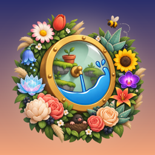

Need a hand in the garden? Most answers are below.
How to play. Drag anywhere to spin the wheel. Gravity pulls the water from the pipe, so guide it around the spokes and into the thirsty flowers. Every flower you water gives Dew. Spend Dew in the shop on new waters and pipes. Seasons change as you go: spring, summer, autumn and winter each bring new tricks.
Open the game, tap Pause › Settings › Restore purchases. Make sure you're signed in to the same Apple ID or Google account you bought it with. Dew packs are consumable and can't be restored.
Close the game completely and open it again while online; pending purchases are delivered at start-up. If it's still missing, email us with the date and the receipt from Apple or Google and we'll sort it out.
Refunds are handled by the store. On iPhone go to reportaproblem.apple.com. On Android open Google Play › Profile › Payments & subscriptions › Budget & history, or see Google Play refunds.
The reward is only granted if the video plays to the end. If no video is available right now, the button is hidden. Try again in a minute, and check that you're online.
Progress is saved only on your device, so deleting the game resets it. There's no cloud save yet. “Remove Ads” can always be restored (see above).
Yes. Go to Pause › Settings to toggle music, sound effects, haptics and tilt controls.
On iPhone: Settings › Privacy & Security › Tracking, turn Gravity Garden off. On Android: Settings › Google › Ads, then delete your advertising ID. See our privacy policy for details.
Found a bug or have an idea for the garden? Tell us your device model and what happened. We read every message.
Email supportkhalimjanov2000@gmail.com